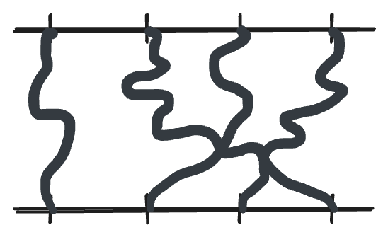
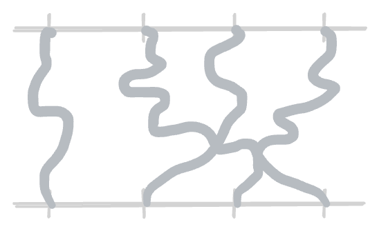

Eugene Wigner, a prominent theoretical physicist and Nobel Prize winner, famously published an essay in 1960 titled "The Unreasonable Effectiveness of Mathematics in the Natural Sciences". In it, he defines mathematics as a discipline where the emphasis is on the invention of concepts and rules for the sake of deriving even more complex abstractions. To Wigner, mathematics was fundamentally a pursuit of the mind. While elementary geometry and arithmetic were initially developed to describe entities directly present in the physical world, he argued that this does not seem to apply to more advanced mathematical concepts, which are often derived through strings of complex arguments from first principles, seemingly divorced from reality.
Yet, we continue to use this abstract language to successfully describe our universe, repeatedly discovering deep connections between physics and mathematics in places where we least expect them.
One of these fascinating connections manifests through the exotic state of matter known as the Bose-Einstein Condensate (BEC) and a seemingly unrelated branch of discrete mathematics: combinatorics. At this intersection, the physical behavior of subatomic particles is governed by the same combinatorial rules that describe the structure of permutations, which I set out to explore in this post.
Distinguishable and indistinguishable particles: a combinatorial perspective
In the early 20th century, physicists began to consider the possibility that particles might be fundamentally indistinguishable from one another. A Polish physicist, Władysław Natanson, was the first one to propose this concept, which was later famously rediscovered by Satyendra Nath Bose and Albert Einstein. This seemingly simple observation, related to the symmetry of the wave function of two particles:
$$\psi(x_1, x_2) = \psi(x_2, x_1)$$has far-reaching consequences. The broader context is that we are trying to organize particles into discrete energy states. Let’s look at this from a purely combinatorial perspective by considering a model of "balls and bins," representing particles and energy states. The question we are trying to answer is: how many ways are there to put \(n\) balls into \(k\) bins?
Distinguishable particles
First, let’s think of the particles as distinguishable, meaning every particle carries a unique label.
We want to find the number of ways \(W_d\) to achieve a specific set of occupation numbers \((n_1, \dots, n_k)\), where \(\sum n_i = n\) and \(n_i\) represents the number of particles in the \(i\)-th bin.
To fill the first bin, we choose \(n_1\) particles out of \(n\), which is \(\binom{n}{n_1}\). For the second bin, we choose \(n_2\) particles from the remaining \((n-n_1)\) particles, given by \(\binom{n-n_1}{n_2}\). Continuing this process until the \(k\)-th bin, we arrive at the multinomial coefficient:
$$\begin{aligned} W_d &= \binom{n}{n_1}\binom{n-n_1}{n_2}\binom{n-n_1-n_2}{n_3}\cdots\binom{n_k}{n_k} \\ &= \frac{n!}{n_1!(n-n_1)!} \cdot \frac{(n-n_1)!}{n_2!(n-n_1-n_2)!} \cdots 1 = \frac{n!}{n_1!n_2!\cdots n_k!} \end{aligned}$$To find the probability of observing this specific distribution, we divide \(W_d\) by the total number of possible arrangements. Since each of the \(n\) particles can independently enter any of the \(k\) bins, there are \(k^n\) total arrangements. The probability (which we will call \(P_{MB}\)) is:
$$P_{MB} = \frac{W_d}{k^n} = \frac{1}{k^n}\frac{n!}{n_1!n_2!\cdots n_k!}$$Indistinguishable particles
Now, we switch the perspective to indistinguishable particles. In this case, we use the "stars and bars" method (although we still deal with balls and not stars). To create \(k\) bins, we need \(k-1\) bars to separate \(n\) balls.
The total number of symbols (balls plus bars) is \(n + k - 1\). Any arrangement of these symbols constitutes a valid distribution. The number of unique arrangements \(W_i\) is simply the number of ways to choose the positions of the bars from the total number of available slots:
$$W_i = \binom{n+k-1}{k-1}$$If every one of these configurations is equally likely, the probability of observing any single specific state \(P_{BE}\) is:
$$P_{BE} = \frac{1}{W_i} = \frac{1}{\binom{n+k-1}{k-1}}$$The Classical Limit
An interesting result emerges when the number of bins (states) is much higher than the number of balls (particles), i.e., \(k \gg n\). First, let’s expand \(P_{BE}\):
$$P_{BE} = \frac{n!(k-1)!}{(n+k-1)!} = \frac{n!}{(n+k-1)(n+k-2)\dots k}$$There are \(n\) terms in the denominator. If \(k\) is much larger than \(n\), then each term \((k+i) \approx k\), and we are left with:
$$P_{BE} \approx \frac{n!}{k^n}$$Now, let's look at \(P_{MB}\) in the same limit. When \(k \gg n\), particles are spread so thin that the probability of two particles landing in the same bin is negligible. For the vast majority of observed states, \(n_i\) is either 0 or 1. Therefore:
$$P_{MB} = \frac{1}{k^n}\frac{n!}{n_1!n_2!\cdots n_k!} \approx \frac{1}{k^n}\frac{n!}{1! \cdot 1! \cdot 0! \cdots} = \frac{n!}{k^n}$$In this limit, the two distributions become identical. The first model describes the Maxwell-Boltzmann (MB) distribution. In the classical world, particles are distinguishable, and in the continuous limit, we can derive the classical Boltzmann distribution as discussed in the previous post.
The second model is the Bose-Einstein distribution, named after Bose, who in 1924 sent a paper to Einstein in which he derived Planck’s black-body radiation law by treating light as a gas of indistinguishable photons rather than relying on classical electrodynamics. This crucial insight allowed Einstein to extend the method to atoms, theoretically predicting a new state of matter: the Bose-Einstein Condensate.
Back to physics: the many-body density matrix
The natural follow-up question to this purely combinatorial observation is whether we can observe in a simulation anything resembling Bose-Einstein condensation. It turns out that we can leverage quantum paths and density matrices, combined with Monte Carlo simulations introduced in the Quantum Statistical Mechanics post, to observe the condensation of particles in a harmonic potential.
So far we've only been working with single particles. In the section on path integrals, we defined the partition function for a single particle as the trace of the density function:
$$ Z^{single} = \int dx\rho(x, x, \beta) $$In other words, the single-particle density function is the sum of all paths that a particle can take from \(x\) back to \(x\). Now, let's consider two particles and their paths between \(x_0 \to x_0\) and \(x_1 \to x_1\). Since it is a two-particle system, the density matrix now depends on four coordinates (two for each particle) - a consequence of the mathematical formulation of quantum mechanics (tensor products of Hilbert spaces, to be precise, though we won't dwell on that here).
The partition function is now defined as the integral over a \(x_0\) and \(x_1\). Luckily, for non-interacting particles, we can split the density matrix into an product of two independent, single-particle density matrices.
$$ Z^{two} = \int dx_0dx_1\rho(x_0, x_1; x_0, x_1; \beta) = \int dx_0dx_1\rho(x_0, x_0, \beta)\rho(x_1, x_1, \beta) $$Bose's insight
In case of the indistiguishable particles, particles do not necessary need to end up at the points that they're started from - after all we cannot tell them apart. Particles like that are called bosons, after the aforementioned Satyendra Bose.


Now if we try to write down the partition function for \(N\) particles, we need to consider that the particles starting from positions \((x_0, \dots, x_{N-1})\) can end up at positions indicated by a certain permutation \(\sigma\) and we need to remember to normalize it by the number of possible permutations. However, the same simplification can be made as above, where we can split the multi-particle density function into a product of single-particle density functions.
$$ \begin{aligned} Z_N &= \frac{1}{N!}\int dx_0\dots dx_{N-1}\sum_\sigma\rho(x_0, \dots, x_{N-1}; x_{\sigma(0)}, \cdots, x_{\sigma(N-1)}, \beta) \\\\ &= \frac{1}{N!}\int dx_0\dots dx_{N-1}\sum_\sigma\rho(x_0, x_{\sigma(0)}, \beta)\cdots\rho(x_{N-1}, x_{\sigma(N-1)}, \beta) \end{aligned} $$For simplicity, let's consider a system of 4 particles. The partition function requires the sum over all permutations. We know from combinatorics that each permutation can be written in terms of cycles, for example \(\sigma = (0, 1, 3, 2)\) can be written as \((0)(1)(23)\). If we focus on this single permutation, we see that the partition function can be written as
$$ Z_{(0)(1)(23)} = \int dx_0\rho(x_0, x_0, \beta) \int dx_1(\rho{x_1, x_1, \beta}) \underbrace{\int dx_2dx_3 \rho(x_2, x_3, \beta)\rho(x_3, x_2,\beta)}_\text{convolution} $$In the above equation, we see the familiar convolution of density matrices that lets us rewrite it as a density matrix at lower temperature. On top of that, if we annotate the partition function of a single particle as \(z(\beta)\), we obtain:
$$ Z_{(0)(1)(23)} = \int dx_0\rho(x_0, x_0, \beta) \int dx_1(\rho{x_1, x_1, \beta}) \int dx_2\rho(x_2, x_2, 2\beta) = z(\beta)^2z(2\beta) $$For each permutation, we can write its partition function in a similar way: \(Z_{(0)(1)(2)(3)} = z(\beta)^4 \), \(Z_{(0)(1)(23)} = z(\beta)^2z(2\beta)\) and so on. And \(z(\beta)\) is simply the single particle partition function, which we derived in the previous post.
However, calculating the total bosonic partition function \(Z_N\) remains a difficult challenge. According to our derivation, we must sum the weights of all possible permutations of the \(N\) particles:
$$ Z_N = \frac{1}{N!}\sum_{\sigma} Z_\sigma $$To actually compute this by hand, we would have to look at every single one of the \(N!\) permutations, decompose it into its unique cycle structure, calculate the product of \(z(k\beta)\) for those specific cycles, and sum them all up.For \(N=4\), we have \(24\) permutations, which is doable. But for macroscopic systems where \(N \approx 10^{23}\), this combinatorial explosion is completely intractable.
Generating functions and analytic combinatorics
Let's take a step back, or rather a detour, and see if we can find a simpler formulation of this function.
In mathematics, there's a clever tool used for representing infinite sequences that can be manipulated using analytical tools, called generating functions.
The idea is fairly straightforward - given a sequence \((a_0, a_1, a_2 \dots)\), the generating function for the sequence is given as follows:
$$A(x) = \sum_{k \geq 0} a_k x^k$$If we set \(a_i = 1\), i.e., we're representing the sequence \((1, 1, 1, \dots)\), our generating function will be simply a geometric series1:
$$A(x) = \sum_{k \geq 0} x^k = \frac{1}{1-x}$$We can ask for the coefficient of the generating function \(A(x)\) with the notation \([x^k]A(x)\), and the answer would be 1.
The power of generating functions lies in the vast array of operations we can perform on the series to extract the sequences of interest and learn the analytical properties of the function.
So far we've introduced so-called ordinary generating functions. There are also exponential generating functions (EGF) for sequences involving a normalizing factor \(k!\), which is particularly useful for the analysis of labelled objects (as opposed to unlabelled ones for ordinary generating functions (OGF)). The factor \(k!\) accounts for all the arrangements of the labelled items.
$$A(x) = \sum_{k \geq 0} a_k \frac{x^k}{k!}$$Naturally, the sequence \((1, 1, 1, \dots)\) can be represented by the EGF \(e^x\), because, by definition:
$$e^x = \sum_{k \geq 0} \frac{x^k}{k!}$$There is a branch of mathematics called analytic combinatorics, developed around generating functions and using them to study the properties of combinatorial structures. The field has developed the symbolic method that helps translate combinatorial constructions into generating function equations and then analyze properties like coefficient asymptotics using complex analysis. We're going to introduce some tools that will come in handy later on.
Symbolic method
The central notion is a combinatorial class (often denoted with \(\mathcal{A}, \mathcal{B}\) and so on) - a set of discrete objects with an associated size function, denoted by \(|\bullet|\). Combinatorial objects are built from atoms, defined to be elements of size 1. A simple example of a combinatorial class is bitstrings with 0 and 1 atoms; there are 2 bitstrings of size 1, 4 bitstrings of size 2, and in general \(2^n\) bitstrings of size \(n\).
We have a fundamental identity which allows us to view the generating function as an analytic form representing the counting sequence or as a combinatorial form representing individual objects through their size.
$$A(x) = \sum_{n \geq 0} a_n x^n = \sum_{a \in \mathcal{A}} x^{|a|}$$Derivation
First, rewrite the right-hand sum by iterating through sizes and then through the elements of that size:
$$\sum_{a \in \mathcal{A}} x^{|a|} = \sum_{n \geq 0} \left( \sum_{a \in \mathcal{A}_n} x^{|a|} \right)$$Since the size of an object is \(n\) for all elements in \(\mathcal{A}_n\):
$$\sum_{n \geq 0} \left( \sum_{a \in \mathcal{A}_n} x^{|a|} \right) = \sum_{n \geq 0} \left( \sum_{a \in \mathcal{A}_n} x^n \right)$$The term in the parentheses is simply \(x^n\) multiplied by the number of elements in \(\mathcal{A}_n\) (denoted \(a_n\)):
$$\sum_{n \geq 0} a_n x^n$$Now we can introduce simple operations on combinatorial classes. Given two classes \(\mathcal{A}\) and \(\mathcal{B}\), we can build:
-
\(\mathcal{A} + \mathcal{B}\): the class consisting of disjoint copies of the members of \(\mathcal{A}\) and \(\mathcal{B}\).
-
\(\mathcal{A} \times \mathcal{B}\): the class of ordered pairs of objects, one from each class.
-
\(SEQ(\mathcal{A})\): the class of sequences of objects from \(\mathcal{A}\) of all lengths, including the empty element. Equivalent to \(\epsilon + \mathcal{A} + \mathcal{A} \times \mathcal{A} + \dots\).
This formulation allows us to translate the structural description of a class into a functional equation. For example, for the \(\mathcal{A} \times \mathcal{B}\) class, the generating function is the product of the individual generating functions:
$$\sum_{\gamma \in \mathcal{A} \times \mathcal{B}} x^{|\gamma|} = \sum_{\alpha \in \mathcal{A}} \sum_{\beta \in \mathcal{B}} x^{|\alpha| + |\beta|} = \left( \sum_{\alpha \in \mathcal{A}} x^{|\alpha|} \right) \left( \sum_{\beta \in \mathcal{B}} x^{|\beta|} \right) = A(x)B(x)$$From this, the generating function for sequences follows immediately:
$$SEQ(\mathcal{A}) = \epsilon + \mathcal{A} + \mathcal{A} \times \mathcal{A} + \dots \implies 1 + A(x) + A(x)^2 + \dots = \frac{1}{1-A(x)}$$Symbolic method for labelled classes
If we assume the individual atoms of a combinatorial class are labelled, we use exponential generating functions (EGFs).
Crucial operations for our study include:
-
\(SET(\mathcal{A})\): the class of unordered sets of elements of \(\mathcal{A}\).
-
\(CYC(\mathcal{A})\): the class of cyclic sequences of elements of \(\mathcal{A}\).
The SET construction
To form a set of exactly \(k\) components from \(\mathcal{B}\), we divide the sequence construction by \(k!\) because the order of components does not matter in a set. The EGF for \(SET_k(\mathcal{B})\) is \(B(x)^k/k!\).
Since a set can have any number of components, we sum over all \(k\):
$$A(x) = \sum_{k \geq 0} \frac{1}{k!} B(x)^k = \exp(B(x))$$The CYC construction
A CYC construction takes \(k\) elements from \(\mathcal{B}\) and arranges them in a circle. In a circle, there is no "first" element; only the relative order matters.
Again, we start with the labelled sequence and adjust for symmetry. A sequence of \(k\) components has the EGF \(B(x)^k\). In a sequence of \(k\) items, there are \(k\) different starting positions. In a cycle, all \(k\) of those starting positions are considered the same configuration, so we need to divide by the rotational shifts.
$$A(x) = \sum_{k \geq 0} \frac{1}{k} B(x)^k$$The logarithmic identity
As mentioned earlier, we can use a variety of analytical tools to manipulate generating functions. One clever example is integration. Let's consider a generating function \(A(x) = \sum_{n \geq 0} a_nx^n\).
$$\begin{aligned} \int_0^{x}A(t)dt &= \int_0^{x}dt\sum_{n \geq 0} a_nt^n \\ &= \int_0^{x}dt (a_0 + a_1t + a_2t^2 + \dots) \\ &= a_0x + \frac{1}{2}a_1x^2 + \frac{1}{3}a_2x^3 + \dots = \sum_{n\geq 1} \frac{a_{n-1}}{n}x^n \end{aligned}$$Now, if we take the generating function \(A(x) = \sum_{n \geq 0} x^n = \frac{1}{1-x}\) and integrate both sides, we obtain:
$$\ln\frac{1}{1-x} = \sum_{k\geq 1} \frac{x^k}{k}$$We can use this identity to rewrite the EGF for the CYC construction as:
$$A(x) = \ln\frac{1}{1-B(x)}$$Bosonic partition function
Now that we have developed the necessary tools, we can attempt to calculate the bosonic partition function again, but from a slightly different perspective.
The set of cycles perspective
In the path integral formulation, \(z(\beta)\) represents the partition function of a single particle—the sum over all closed paths a particle can take from \(x\) back to \(x\) in imaginary time \(\beta\).
When \(k\) bosons form a cycle in a permutation, they don't return to their own starting position; instead, they "hand off" their path to the next particle in the cycle. This forms a single long closed path of length \(k\beta\). The generating function for a single cycle of \(k\) particles is given by a CYC construction. Note that we are summing over \(k \geq 1\) because 0 is not a valid cycle length.
$$C(x) = \sum_{k\geq 1} \frac{z(k\beta)}{k}x^k$$The entire system is basically a set of disjoint cycles, so according to the SET construction, the generating function for the whole system is:
$$G(x) = \exp(C(x))$$The regular counting perspective
Above, we've come up with an exponential generating function for a system of bosonic particles using the "set of cycles" perspective. Now, imagine that we have a combinatorial class \(\mathcal{Z}_N\) representing all possible configurations for a system containing \(N\) particles. Through the union construction of classes, we see that the generating function for the system is a sum of all individual pieces, one for each number of particles:
$$G(x) = \sum_{N \geq 0} Z_Nx^N$$It's worth noting that this generating function is annotated here with \(G\) because in physics it is actually called the grand canonical partition function (though often called \(\varXi\) in books).
Computational optimization
Going back to our problem with calculating the bosonic partition function, let's take a closer look at \(G(x)\) derived from the set of cycles perspective. We are going to simplify the \(O(N!)\) algorithm—which requires iterating through all permutations—into a much more efficient one with a clever observation. For clarity, let's replace \(z(k\beta)\) with the symbol \(a_k\).
First, let's apply the logarithm on both sides:
$$\ln G(x) = \sum_{k\geq 1} \frac{a_k}{k}x^k$$Now, let's take a derivative with respect to \(x\):
$$\frac{1}{G(x)}\frac{dG(x)}{dx} = \sum_{k\geq 1} a_kx^{k-1}$$We can rearrange and move \(G(x)\) to the right side to obtain a product of two power series:
$$\frac{dG(x)}{dx} = G(x)\sum_{k\geq 1} a_kx^{k-1}$$Now, we can use our second definition of \(G(x)\) and replace it and its derivative in the above equation, remembering that \(\frac{dG(x)}{dx} = \sum_{N\geq 1} NZ_Nx^{N-1}\):
$$\sum_{N\geq 1} NZ_Nx^{N-1} = \left(\sum_{m\geq 0} Z_mx^m\right)\left( \sum_{k\geq 1} a_kx^{k-1} \right)$$To find the coefficient \(NZ_N\), we look at the right side for terms where the powers of \(x\) add up to \(N-1\), i.e., \(m + (k-1) = N - 1\), which means \(m = N - k\). Thus, the coefficient of \(x^{N-1}\) is:
$$NZ_N = \sum_{k = 1}^N Z_{N-k} a_k$$This is a recurrence relation that can be computed in \(O(N^2)\) time with dynamic programming, which is a massive improvement over the initial \(O(N!)\).
The physics of Bose-Einstein condensation
Having derived all the combinatorial machinery, we can now return to the physics and use these tools to analyze the energy states of the bosonic gas. Our goal is to predict the critical temperature at which particles begin to condense into a Bose-Einstein condensate.
First, assume our bosons are trapped in a 3D harmonic potential \(V(r) = \frac{1}{2}r^2\), remembering that we're operating in natural units (\(\hbar = m = \omega = 1\)). The energy levels are given by \(E = (n_x + n_y + n_z + \frac{3}{2})\). Let's set the ground state at \(\epsilon_0 = 0\) and let the energy of state \(i\) be \(\epsilon_i\).
We've previously established that the single-particle partition function is the sum over all states.
$$z(\beta) = \sum_{i} e^{-\beta\epsilon_i}$$We've also derived the grand canonical partition function.
$$G(x) = \exp\left(\sum_{k\geq 1} \frac{z(k\beta)}{k}x^k\right)$$In analytic combinatorics, to find the expected size of the multiset (the total number of particles \(N\))2, we take the logarithmic derivative of the generating function with respect to the marking variable \(x\):
$$\begin{aligned} N &= x \frac{\partial}{\partial x} \ln G(x) \\ &= x \frac{\partial}{\partial x} \left( \sum_{k \geq 1} \frac{z(k\beta)}{k}x^k \right) = \sum_{k \geq 1} z(k\beta) x^k \end{aligned}$$Here is where the physical insight emerges. Our goal is to find the phase transition analytically, which mathematically manifests as a dominant singularity.
Let's decompose the single-particle partition function into the ground state (\(\epsilon_0 = 0\)) and the rest of the excited states:
$$z(\beta) = e^{-\beta \cdot 0} + z_{ex}(\beta) = 1 + z_{ex}(\beta)$$and substitute it back into the equation above:
$$\begin{aligned} N &= \sum_{k \geq 1} (1) x^k + \sum_{k \geq 1} z_{ex}(k\beta) x^k \\ &= \frac{x}{1-x} + \sum_{k \geq 1} z_{ex}(k\beta) x^k \end{aligned}$$We can observe that the first term introduces a singularity at \(x = 1\). As we lower the temperature (increasing \(\beta\)), \(x\) needs to shift closer to 1 (the singularity) to maintain a constant \(N\).
In the limit of \(x \to 1\), the maximum capacity of the excited states is:
$$N_{max} = \lim_{x\to 1} \sum_{k \geq 1} z_{ex}(k\beta) x^k = \sum_{k \geq 1} z_{ex}(k\beta)$$If the physical particle number \(N\) exceeds the combinatorial limit of \(N_{max}\), the equation essentially breaks down, and the remaining particles must be absorbed by the term \(\frac{x}{1-x}\). This overflow is the mathematical reflection of physical condensation.
Estimation of condensation temperature
For a 3D harmonic oscillator, the single-particle partition function is the product of the partition functions in each direction independently:
$$z(\beta) = \left( \sum_{n=0}^{\infty} e^{-\beta n} \right)^3$$This is simply a geometric series, which evaluates to:
$$z(\beta) = \left( \frac{1}{1 - e^{-\beta}} \right)^3$$As before, we can isolate the function for the excited states, knowing that the ground state contributes exactly 1 (because \(n_x = n_y = n_z = 0\), hence \(e^0 = 1\)):
$$z_{ex}(\beta) = \left( \frac{1}{1 - e^{-\beta}} \right)^3 - 1$$Now, using a Taylor expansion for the denominator and setting \(1 - e^{-\beta} \approx \beta\), we can simplify our partition function for the excited states:
$$z_{ex}(\beta) \approx \frac{1}{\beta^3}$$This is a somewhat questionable step because, technically, this should work only for a macroscopic number of particles where the critical temperature is much larger than the single-particle energy level spacing—which is not necessarily the case in my simulation. However, we will proceed with it as it simplifies the derivation significantly and yields a quite precise approximation.
We return to the exact mathematical threshold where the marking variable hits the singularity (\(x \to 1\)). Substituting our approximation into the maximum capacity of the excited states yields:
$$N = \sum_{k \geq 1} \frac{1}{(k\beta_c)^3} = \frac{1}{\beta_c^3} \sum_{k \geq 1} \frac{1}{k^3}$$This infinite sum is famously the Riemann zeta function, \(\zeta(s)\), evaluated at \(s=3\), a value known as Apéry's constant. Interestingly, unlike \(\zeta(2)\) or \(\zeta(4)\) and other even positive integers, no simple closed-form expression in terms of well-known constants (like powers of \(\pi\)) has yet been found for Apéry's constant.
Given this equation and substituting \(T_c = 1/\beta_c\), the critical condensation temperature is given by:
$$T_c = \left( \frac{N}{\zeta(3)} \right)^{1/3}$$In my simulations, I use a dimensionless scaled temperature (\(T^*\)) that removes the dependence on the particle number. Therefore, we expect the condensation phase transition to occur around \(T^* \approx \zeta(3)^{-1/3} \approx 0.94\). And indeed, in the simulation, we observe the onset of cycle formation at a \(T^*\) of approximately 0.9.
In this Path Integral Monte Carlo simulation, we observe that at high temperatures (\(T^* = 1.2\) to \(1.0\)), the system behaves like a classical gas: a cloud of mostly disconnected particles that rarely form long permutation cycles. However, as the temperature drops towards the critical point (\(T^* \approx 0.9\)), the bosons begin forming permutation cycles of increasing length.
At very low temperatures, these individual short cycles link together into macroscopic cycles spanning the vast majority of the particles. Because all these particles share a single, extended permutation cycle, they lose their individual identities entirely and behave as one quantum entity, the Bose-Einstein condensate.
We can also observe that the condensation does not happen for non-bosonic particles and they only slightly concentrate in the center with lowering temperature due to classical thermodynamic phenomena.
Summary
By reframing the behavior of bosons as a combinatorial problem of permutations and generating functions, an otherwise intractable thermodynamic calculation is transformed into a solvable model. Also, seemingly out of nowhere, Riemann zeta function (through Apéry's constant) appears in the estimation of critical phase transition temperature of the quantum gas. Ultimately, this is a beautiful testament to Eugene Wigner's concept of the "unreasonable effectiveness of mathematics in the natural sciences."
-
We ignore questions of convergence for now, as these are not necessary for the manipulations we're going to do with the generating functions. It's enough that the series usually converge for small enough \(x\). ↩︎
-
In thermodynamics, the total number of particles \(N\) is found by taking the derivative of \(\ln G(x)\) with respect to the chemical potential \(\mu\). We haven't introduced the notion of chemical potential but the important part is that this translates to the total number of particles operator in the form \(x\frac{\partial}{\partial x}\). ↩︎